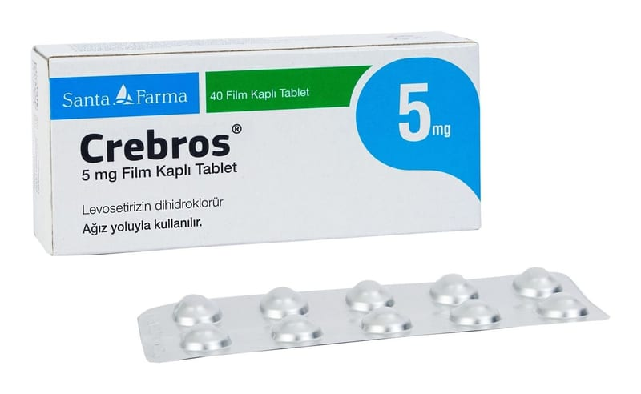

Crebros 5 mg Film Kaplı Tablet, 40 Adet

Ne için kullanılır
KT · Bölüm 1 CREBROS®, alerji tedavisinde kullanılan bir antihistaminiktir. Antihistaminik ilaçlar, histaminin etkisini yok eder, alerji belirtilerini ortadan kaldırır. CREBROS®, 20 ve 40 film kaplı tabletten oluşan blister ambalajlarda sunulur. Film kaplı tabletler beyaz renkli, oval, bombeli, bir yüzünde “LS” logosu bulunan, film kaplı tabletler şeklindedir. CREBROS®, 6 yaş ve üstü çocuklarda ve erişkinlerde, alerjik nezle (intermittan/persistan veya mevsimsel/pereniyal) ve kurdeşen (ürtiker) ile ilişkili belirtilerin (kaşıntı, kabartı, kızarıklık) giderilmesinde kullanılır. CREBROS®, sığır kaynaklı laktoz monohidrat içerir.